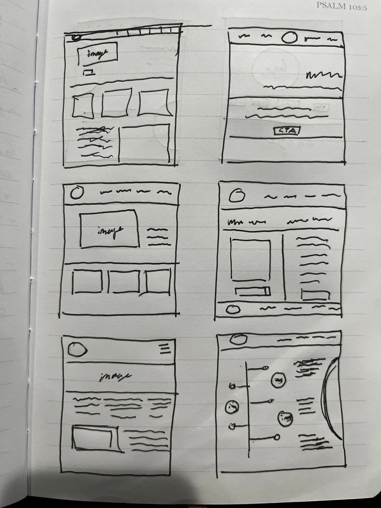
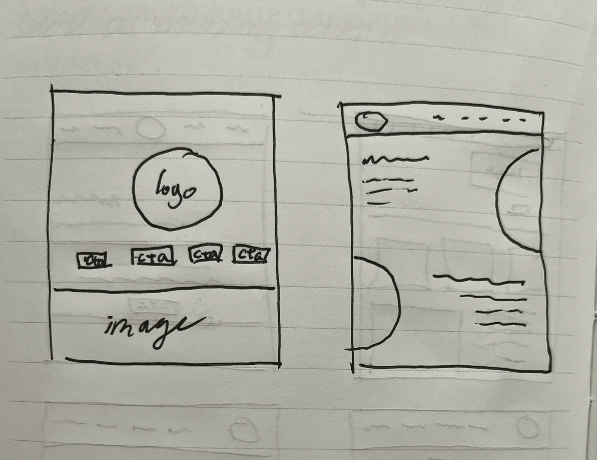
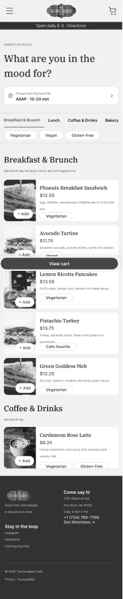
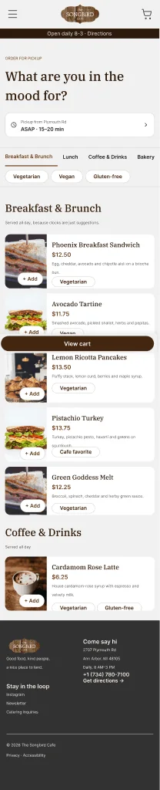
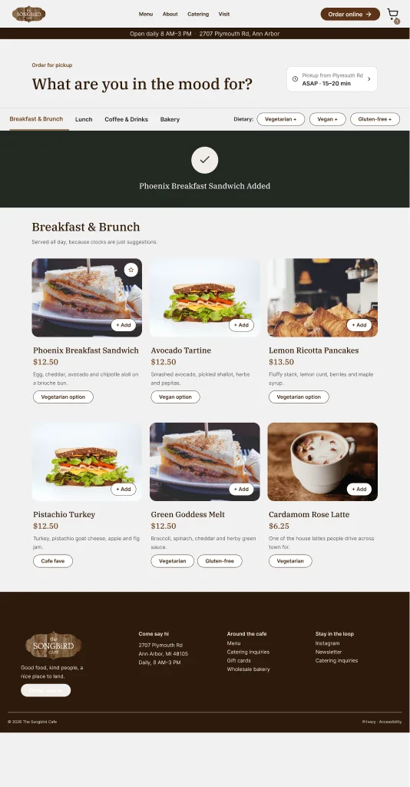
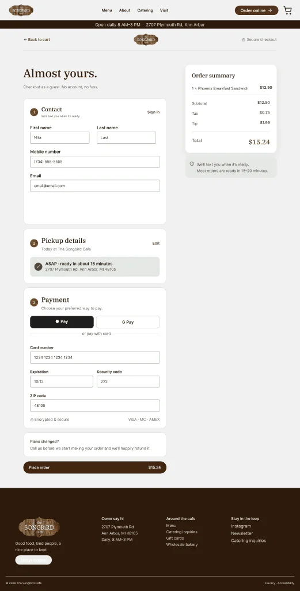

Visitors come to the site for one quick answer: hours, dietary options, or what kind of place it is. Those answers are hard to find.
what I did
An on-site visit with 6 intercept interviews (11 adults), a conversation with on-duty staff, and a review analysis. Then 8 homepage sketches, a desktop prototype, 6 mobile wireframes, and a usability test against the live site.
the result
Testing showed me what to fix: clearer feedback when an item is added, an error for an empty cart, and totals that match on every screen. The comparison with the live site wasn't a fair test, because the sandwich I chose wasn't on Songbird's online menu that day.
overview
Most people walk in without checking the website. I redesigned it for the people who do.
Mile 1 · The brief
The website doesn't answer the questions people bring to it
Songbird's in-person experience builds loyal regulars, but the site doesn't show the current menu, dietary options, hours, or what kind of place it is. First-timers arrive uncertain, and staff absorb questions the site could answer.
user goals
Know whether it's open and how to get there (hours changed this year; parking matters)
Find food that fits a dietary need: gluten-free, dairy-free, sugar-free
Skip the wait at peak times (staff named an 11:30–12:40 rush)
Understand what kind of place it is before visiting
The homepage and the online ordering flow (menu, item details, cart, checkout, confirmation) on desktop and mobile.
How it started
Songbird was on a class list of local businesses whose websites had room to improve. Songbird didn't ask for a redesign; I chose it because I like going there.
Why ordering
Songbird takes orders through Toast, a third-party platform it can't redesign. My flow is a concept for ordering inside Songbird's own site, built around the lunch rush staff described.
Mile 2 · Listening
Three sources pointed to the same problems
I combined observation, interviews, and online reviews so no single source decided the direction. The reviews confirmed what I heard in person and contradicted none of it.
Observation3 timed snapshots during a 2-hour visit. Noise went 5/10 → 2/10 → 7/10, with 6 people in line as lunch began.
Intercept interviews6 groups, 11 adults: families, remote workers, first-timers, regulars. Goals, ordering friction, and how people use the website.
Conversation with on-duty staff15–20 minutes. The cafe's goals and what staff wish customers knew.
Review analysisYelp, Tripadvisor, Facebook, Foursquare, and the current site, to see whether interview findings held up at scale.
Heard in person, echoed in reviews
What I heard in person, and what reviews and the current site showed
Heard in person
Reviews and the site
The menu sits away from the kiosk; staff skip the wall menu.
Reviews: the menu is confusing at the ordering stage.
A regular checks the site only for hours, because they changed.
Reviews: people are caught off guard by the 3 PM close.
A first-timer couldn't find sugar-free options online.
The site's menu page was mid-update with a placeholder.
Staff named an 11:30–12:40 rush.
Reviews: waits stretch at peak times.
Mile 3 · The insight
Ordering is easy in person, but the website leaves people guessing
The website is a pre-visit tool, not a habit5 of 6 groups walked in without checking it. People who went online came for one answer: hours, parking, or dietary options.
First-timers are the ones who look aheadThe only group that checked the site was visiting for the first time, and they couldn't find what they wanted.
Dietary options build loyaltyGluten-free and dairy-free regulars named those options as a reason they return.
Small in-person snags add upSilverware you have to ask for, a menu far from the kiosk, drink sizes in ounces.
Unwritten house rules cost staff timeStaff want customers to bus dishes and ask for silverware, but nothing tells them before they arrive.
what I heard
“The only times I check the website is to see the hours and whether or not it's open.”
“I checked the menu to see if there were sugar-free options. I didn't find it…”
Intercept interviews, Sept 2026
Fix what happens before and during ordering
Journey map7 stages from Discovery to Departure for a composite first-timer. Friction clustered at Pre-visit, Ordering, Waiting, and Departure.
Product vision boardTarget groups (remote workers, students, families, friends), top needs (a space to work, a social space, gluten-free and dairy-free options), and business goals.
BuiltState the concept; keep the menu currentHero names breakfast, lunch, coffee; one menu everywhere
BuiltShow hours and parking clearlyPersistent hours bar with Directions on every page
BuiltPost a wait estimatePickup estimate on the menu; progress tracker on confirmation
BuiltRead the order back before payingItem changes shown in cart and checkout
Not builtLive seating or wait statusNeeds live data from the cafe
Out of scopeDrink temperature and egg prepKitchen operations, not a website problem
Current-state journey map, Discovery to Departure. Friction clustered at Pre-visit, Ordering, Waiting, and Departure.
Mile 4 · The design
Every key decision traces back to research
IdeationEight homepage layouts, narrowed by peer critique
I sketched 8 desktop homepage layouts on paper: hero-and-cards, a split image-and-text layout, a logo-centered page with four calls to action, and two experiments built on curved shapes and a timeline.
what 2 peers said
A clear hero with cards underneath was easiest to follow
The main call to action needed to be more obvious
Image-led sections communicated faster than text-heavy ones
what I carried forward
Hero followed by card sections (the middle-left sketch)
A filled “Order online” primary button, outlined “View menu” secondary
Photo-led favorites


8 desktop homepage layouts. Peers found hero-plus-cards easiest to follow; the final homepage grew from the middle-left sketch on page 1.
Wireframes to high fidelityFrom paper to a small design system
Lo-fiPaper sketches of the desktop homepage.
Desktop v1 · Oct 13High-fidelity screens for usability testing, built on Songbird's existing brand.
Desktop v2 · Oct 20Interactions wired through checkout, alt text, tooltips, accessibility fixes.
Mobile mid-fi · Oct 26–27Grayscale frames for the homepage, menu, item sheet, cart, checkout, and confirmation.
Mobile hi-fi · Oct 27Color, type, and components applied from the design system.


Mobile menu, mid-fi to hi-fi: the same structure, with styles, photos, and dietary tags applied.
Type
IBM Plex Serif headings for warmth, Inter for body text and buttons. Separate desktop and mobile scales.
Color
Espresso brown, sage, and neutral ramps that echo the cafe's wood and plants. All text pairs pass WCAG AA (4.5:1).
The full flow from FigJam: decisions (diamonds), system feedback (shaded boxes), the empty-cart and missing-field error paths, and back paths to the cart and menu.
Design rationaleWhat I heard, and what I designed
Each design decision, the research behind it, and the principle it applies
Research showed
I designed
Principle
Hours changed; people get caught by the 3 PM close
Hours and Directions bar on every page
Visibility · consistency
Unclear if it's a coffee shop, cafe, or diner
Hero headline names it: breakfast, lunch, coffee
Visual hierarchy
A first-timer couldn't find sugar-free options
Dietary filter chips plus a tag on every item
Recognition over recall · filtering pattern
The wall menu confuses even staff
Category tabs; photo cards with price and description
Affinity map from the sessions: my prototype's clusters (left) beside the live site's (right).
reading the results honestly
The sandwich task wasn't fair to the live site: I picked an item that's only sometimes on Songbird's online menu, and it wasn't there during testing. That, not the site's layout, is why 2 of 3 couldn't find it.
I weighted behavior over ratings: P1 gave a 5 to a task she didn't finish.
The ASAP comparison isn't a fair win: the cafe was closed during testing, so the live site only allowed scheduled pickup.
Order effects: everyone saw my prototype first. Round 2 will alternate which site goes first.
What changed after testing
On Oct 20, I turned the test findings and an accessibility review into specific fixes, then carried them into the mobile design.
Each issue from testing or the accessibility review, the fix, and the guideline it addresses
What I found
What I changed
Guideline
P3 couldn't tell whether her item was added
A full-width “Added” banner and a cart badge
WCAG 4.1.3 Status messages
P3 asked if other buttons worked
+ Add buttons invert color on hover
Affordance · feedback
Checkout didn't respond with an empty cart
Inline error: “Add something to your cart!”
WCAG 3.3.1 Error identification
Totals didn't match across screens
Count, tax, tip, and total match everywhere
Consistency
People re-entered the same details
Pickup details carry over; autofill offered
WCAG 3.3.7 Redundant entry
Photos had no text alternative
Alt text on every meaningful image
WCAG 1.1.1 Non-text content
“GF” abbreviation and a misspelled tag
“Gluten-free” spelled out; tag fixed
WCAG 2.4.6 · 3.1.4
The nav cart icon was small
Enlarged cart target
WCAG 2.5.8 Target size
Input borders were 2.3:1; focus was 1.5:1
Sage border (3.7:1); 2 px brown focus (8.6:1)
WCAG 1.4.11 · 2.4.7


After testing: the Added banner and cart badge (left) and a checkout with matching totals (right).
Clickable on both platforms, documented in Dev Mode
Two prototype flows: Desktop and Mobile “Order Ahead for Pickup,” both from the Homepage to Order Confirmation.
Dev Mode handoff page: a read-me, about 250 annotations (interactions, accessibility, alt text, content rules), and marked exports.
Clean file: named layers, color, text, and shadow styles, and documented components.
What testing actually showed
Because the sandwich wasn't on the live menu that day, the comparison with the live site doesn't prove my design is better. What testing did show was where my own prototype fell short, and I fixed those problems before designing the mobile version.
next steps
Run round 2 during open hours, with checkout wired end to end
Design a closed-hours state that offers the next pickup time
Label time-limited items, like breakfast-only dishes
what I'd do differently
Click through every task on both sites the day of testing, and pick items that are always on the menu
Ask why behind every rating
Keep benchmarking against the live site
AI use: I used Claude (Anthropic) to help write interview questions, organize reviews and notes, give design feedback, build the mobile item-sheet wireframe, create the user flow diagram, and draft this write-up.